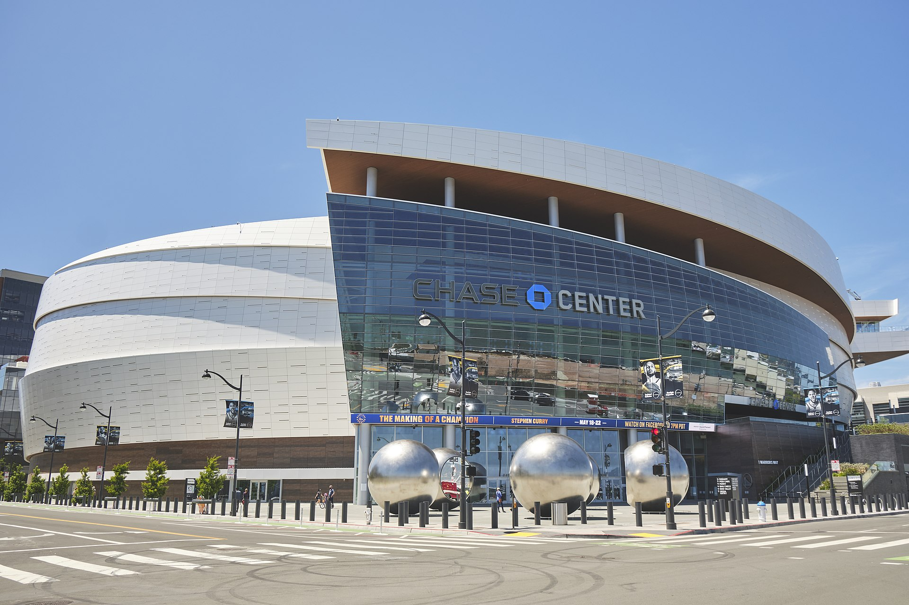

Lokalizacja klubu
 W latach 1946–1962 klub mieścił się w Filadelfii w stanie Pensylwania. W 1962 został przeniesiony do San Francisco, gdzie rezydował do 1971. Następną siedzibą klubu było Oakland, w której klub rezydował do 2019 roku. W 2019 klub został przeniesiony do San Francisco.
W latach 1946–1962 klub mieścił się w Filadelfii w stanie Pensylwania. W 1962 został przeniesiony do San Francisco, gdzie rezydował do 1971. Następną siedzibą klubu było Oakland, w której klub rezydował do 2019 roku. W 2019 klub został przeniesiony do San Francisco.
Hala klubu
Chase Center to hala widowiskowo-sportowa w dzielnicy Mission Bay w San Francisco w Kalifornii. W budynku odbywają się mecze Golden State Warriors z National Basketball Association, a od czasu do czasu rozgrywki męskiej koszykówki San Francisco Dons.